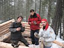
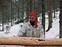
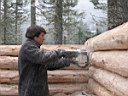
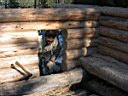
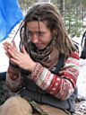
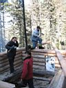
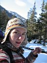

НАША МАША
[ 1 ] - [ 2 ] -[
3 ] - [ 4 ]
6-7-8.10.2007
Заходили в субботу утром, по свежему снегу. После первых подъемов увидели следы - медведица с медвежонком. Потом лохматая мамаша скипнула в лес, а малец так и шел по дороге, до того самого распадка, куда все медведи обычно сворачивают налево по весне, а теперь выходит, что и по осени.
Я, Леха, Костя и Андрей - наконец-то собралась нормальная рабочая бригада. За три дня положили с Лехой на утеплитель первые 2 венца и еще 3 новых венца накидали, тоже конечно на утеплитель. Определились с технологией рубки хаты в лапу :) Тепловой паз между бревнами пропиливали бензопилой. Костя и Андрей шкурили бревна, копали и выравнивали пол.
Ночевали в старом зимовье. Улан-удэнцы в прошлый раз сделали там новый навес, а первооткрыватели сезона (Sat и компания) сделали новое окно в стене.
13-14.10.2007
Снова выходные, снова едем на Мамай. В этот раз тоже компания собралась приличная - я, Леха, Марина и Таня. Девушки с волонтерским и бригадирским опытом ББТ и Америкосии :) Бревна носить и шкурить умеют, вкусно варить умеют, а самое главное - отлично поднимают настроение :)
Так что в эти выходные легко и просто положили еще два венца. Ну может и не совсем легко, потому как Леха сказал, что чем бревна толще, тем зимой теплее :) Да, еще сделали леса из сушняка, а то стены уже высокие. Однако, уже привыкли махать топорами на свежем воздухе и пить чай у костра. Отличные выходные!
Да, а народ уже катается на Лесном Пупыре
- с нами на Мамай заходила Любаня, а в кунге уже несколько дней жила компания любителей первого снега :)
|
|
|

Стройка года |
|
|
|
|
Эх, хорошо сидим! |
А кому-то
не сидится :) |
А я говорю - надо вот такие бревна ложить!
|
20-21.10.2007
Почти тот же состав - я, Леха, Марина и Артем. Слюдянский экстримальный товарищ - Артем, сразу же откликнулся на предложение поучаствовать в строительстве зимовья.
В общем, положили еще два венца. Эти последние, их пришлось делать длинее и паз в них делать по другому, потому что на них крыша будет опираться. Еще дверной проем пропилили, пока так, примерно.. В воскресенье на шум бензопилы заглянули знакомые ребята, человеков десять, они жили в кунге и катали фрирайд на Лесном. Ребята заценили стройку и обещали заходить в гости :)







Продолжение будет... Еще крышу надо делать, дверь, окно, или даже два, печку с трубой. Пипец еще работы. Но на открытие сезона, по любому - ВСЕ К НАМ НА НОВОСЕЛЬЕ !!! :)
[ 1 ] - [ 2 ]
-[ 3 ] - [
4 ]
Слюдянка, октябрь 2007 .А.Б.
 Don`t
worry, Be Happy !
Don`t
worry, Be Happy !